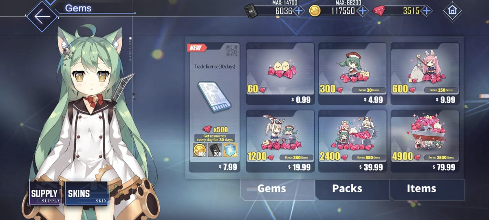

Plataformas
Dispositivos móviles (iOS y Android): Azur Lane está disponible de forma gratuita en las tiendas de aplicaciones de iOS (App Store) y Android (Google Play Store). Los jugadores pueden descargar el juego en sus teléfonos inteligentes y tabletas con los respectivos sistemas operativos iOS o Android. El juego se adapta especialmente bien a dispositivos móviles, con una interfaz de usuario diseñada para pantallas táctiles. Ofrece actualizaciones regulares y eventos especiales para mantener a los jugadores comprometidos.
PC (Windows): Puedes jugar Azur Lane en tu PC con Windows utilizando un emulador de Android como BlueStacks, LDPlayer o NoxPlayer. Los emuladores te permiten ejecutar aplicaciones de Android en tu PC, lo que facilita la jugabilidad en una pantalla más grande con teclado y mouse. Azur Lane en PC ofrece la misma experiencia que en dispositivos móviles y es ideal para aquellos que prefieren jugar en un entorno de escritorio.
Costos

Descripción de los Paquetes de
Gemas
Paquetes de Recarga:Estos paquetes se ofrecen a los
jugadores después de un tiempo desde que se unen al juego. Pueden variar en
términos de contenido y precio, ofreciendo diferentes cantidades de gemas y
recompensas adicionales como suministros, muebles para la base, o personajes
raros. A menudo se presentan como ofertas temporales.
Paquetes
Mensuales: Los paquetes de suscripción suelen estar disponibles por una
tarifa mensual. Proporcionan una cantidad regular de gemas a lo largo del
mes, generalmente con bonificaciones diarias. Pueden incluir otros
beneficios, como recursos extra o artículos exclusivos.